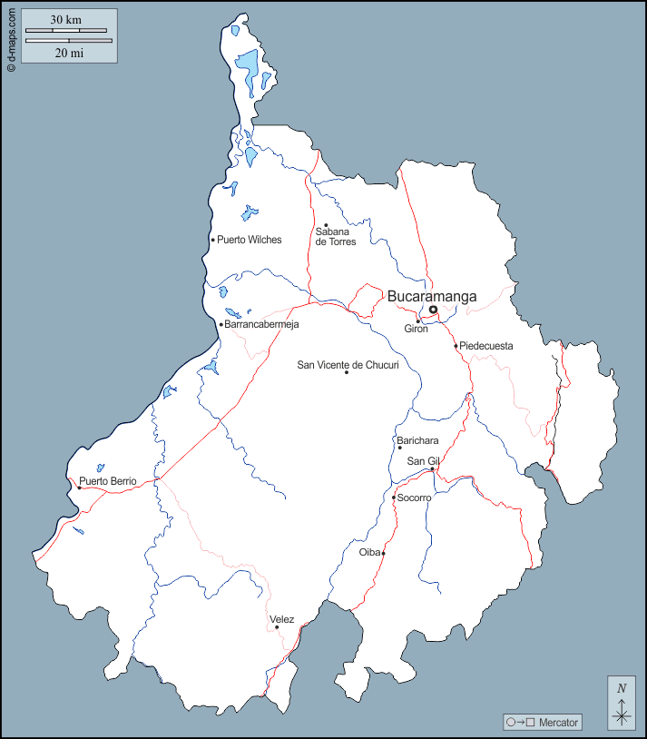

Santander

Sitios turisticos Santander
- Parque Nacional del Chicamocha
- Parque Nacional Natural Serranía de los Yariguíes
- Parque Nacional Natural El Gallineral
- Parque Nacional Natural Paramo de Santurban
- Parque Nacional Natural Guane
Platos tipicos
- Carne oreada
- Lechona santandereana
- Changua
- Arepa santandereana
- Mute santandereano
Sector economico
El sector economico de Santander se basa en la agricultura, la ganaderia y el turismo.